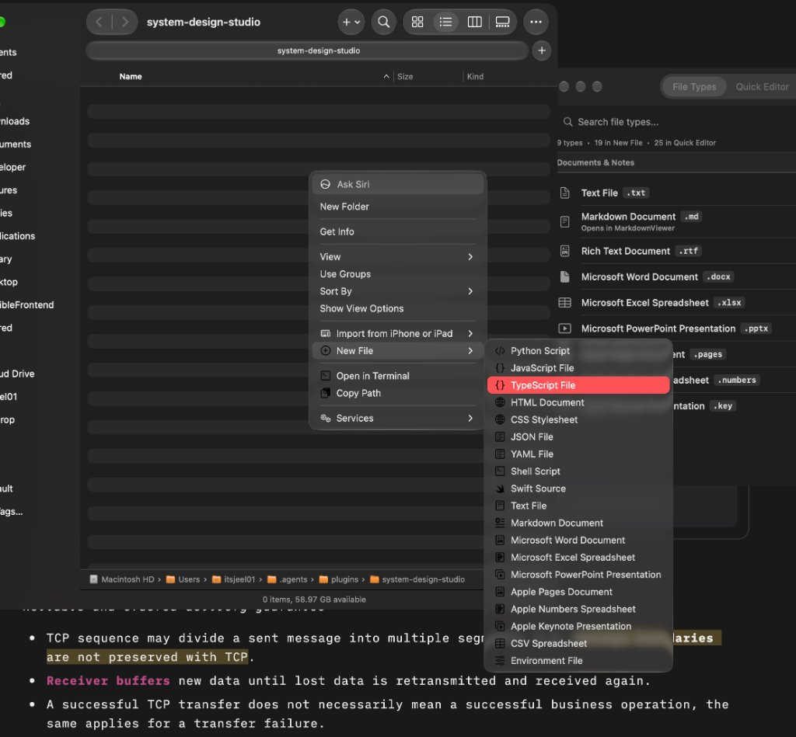
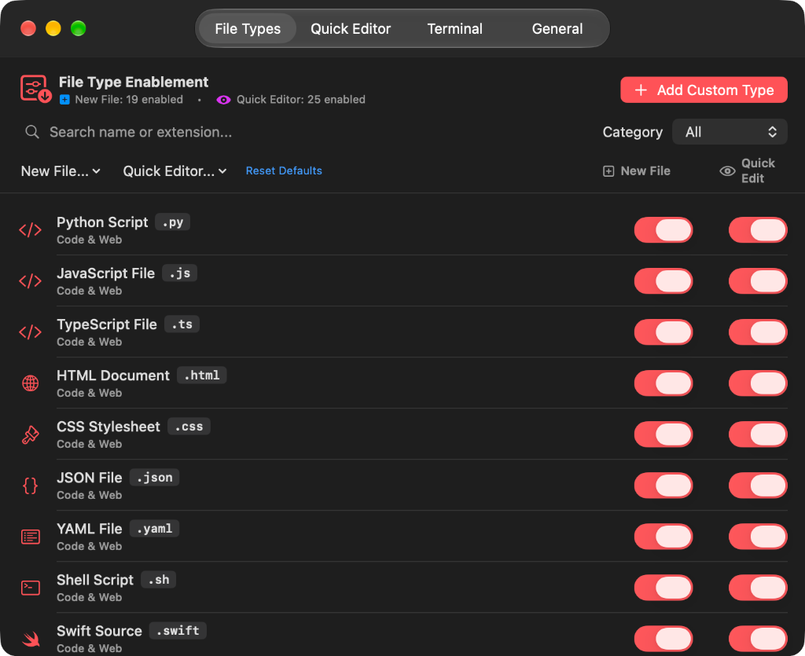

Right-click to create any file.
Option+Space to edit in place.
MacNewFile brings instant file creation across 34+ formats directly into Finder's contextual menu, paired with an editable Quick Look window for fast tweaks without launching a heavy IDE.

Up and running in three steps
macOS sandboxing requires explicit user authorization for Finder extensions and global shortcuts. Follow these three steps to activate MacNewFile.
Place in Applications
Download MacNewFile.zip from Releases or install via Homebrew, then move MacNewFile.app into your /Applications folder.
Enable Finder Extension
Open macOS Settings and check the MacNewFile box under Finder Extensions so the right-click menu appears in folders.
Grant Accessibility
Allow Accessibility permissions so the global ⌥ Space shortcut can detect active Finder selections and float the editor window.
Engineered directly for Finder
Zero background daemons, zero Electron runtime. MacNewFile runs as a lightweight, native sandboxed FinderSync extension in Swift and Objective-C.
Native right-click file creation
Right-click in any Finder folder or on the Desktop to create clean, ready-to-edit files. Each template includes standard boilerplate or native blank document structures.
- 34+ built-in formats across code, documents, and system configuration
- Template icons dynamically adapt to macOS Light and Dark appearance
- Automatic target directory capture with AppleScript fallback
- Immediate inline rename focus upon creation
Quick Look, but editable
macOS Quick Look (Space) is strictly read-only. Press ⌥ Space on any file in Finder to open a lightweight, floating editor directly over your selection.
- Floating panel anchored over your active Finder selection
- Arrow-key tracking: moving in Finder dynamically switches the previewed file
- Multi-tab editor when selecting multiple files in Finder
- Save in-place with ⌘S or open in external IDEs with ⌘↵

Independent file type controls
Configure exactly which formats appear in which context. Toggle file types for the right-click menu independently from the Quick Editor, or register custom extensions with custom boilerplate.
- Independent toggles: enabled in New File ≠ enabled in Quick Editor
- Instant search and category filtering across all supported formats
-
Add custom extensions (e.g.
.svelte,.vue,.proto) - Dynamic preferences reload without restarting Finder

System fonts and appearance
Personalize the Quick Editor with access to all installed macOS monospace and proportional system fonts, customizable font sizing, line numbers gutter, and soft word wrapping.
- Theme options: System Match, VS Code Dark Modern, or Light
- Full system font enumeration (SF Mono, Menlo, JetBrains Mono, Fira Code)
- Configurable line numbers gutter and soft word wrap
- Fluid spring zoom and fade animations anchored to Finder selections

Essential shortcuts
Designed for fast keyboard navigation without taking your hands off the home row.
| Shortcut | Context | Action |
|---|---|---|
| ⌥ Space | Finder (file selected) | Open or close Quick Editor (toggle) |
| ⌘S | Quick Editor | Save changes in-place without leaving Finder |
| Escape or ⌘W | Quick Editor | Close Quick Editor |
| ⌘↵ | Quick Editor | Open active file in external editor (VS Code, Cursor, Zed) |
| ↑ / ↓ / ← / → | Finder (editor open) | Dynamically switch preview to newly selected file |
| ⌘, | MacNewFile Menu Bar | Open Settings window |
Supported file formats
All 34+ built-in formats create clean files with valid boilerplate or native office templates.
Open directory in terminal
Right-click "Open in Terminal" in any Finder folder launches directly into your preferred emulator.
developer@macbook:~/Projects/MacNewFile$ cd ~/Developer/MacNewFile-Enhanced && open -a Ghostty .
# Triggered directly from FinderSync context menu
How MacNewFile compares
Bridging the gap between traditional macOS Finder and modern developer workflows.
| Capability | macOS Finder | Quick Look (Space) | Windows Explorer | MacNewFile |
|---|---|---|---|---|
| Right-click new file | — (Folders only) | — | Basic list | 34+ types & custom |
| In-place file editing | — | — (Read-only) | — | Option+Space editor |
| Finder selection tracking | — | Arrow keys | — | Live arrow tracking |
| Multi-file tabbed preview | — | — | — | Tabbed workspace |
| Custom terminal emulator | — (Terminal only) | — | — | 8+ terminal apps |
| Free & Open Source | Proprietary | Proprietary | Proprietary | 100% GNU GPL-3.0 |
Install MacNewFile
Install via Homebrew, direct release download, or compile from source.
Install via Homebrew:
brew install --cask macnewfile
Then follow the 3-step setup guide above to enable the Finder extension and Accessibility permissions.
killall Finder in Terminal.
xattr -dr com.apple.quarantine allows macOS Gatekeeper to run the app natively.
.svelte, .proto), name, and optional default starter template.